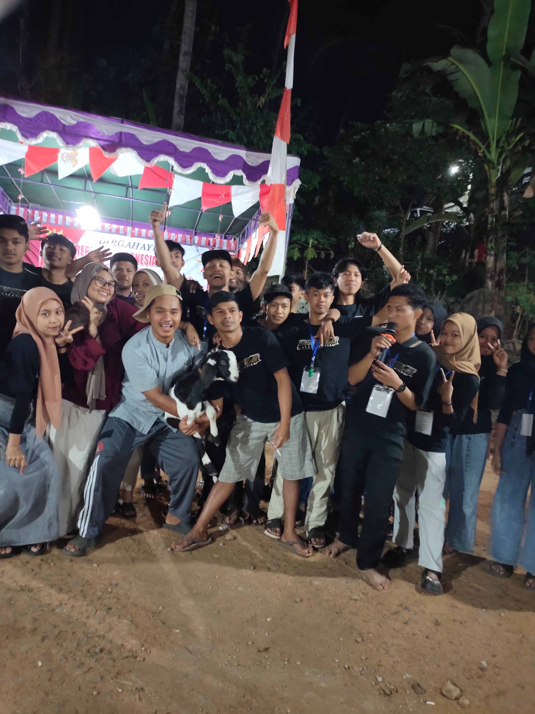
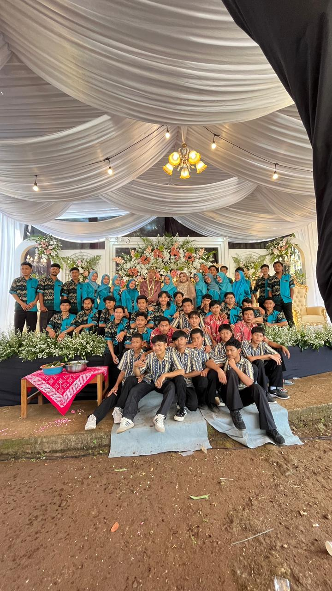
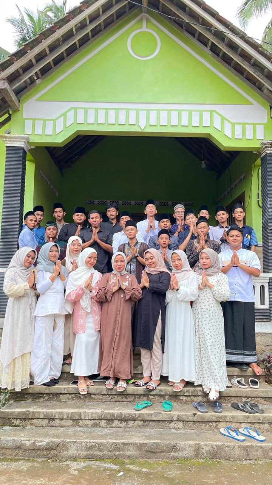

Wadah kreativitas, kegotongroyongan, dan transparansi kegiatan pemuda Karang Taruna KAMPALA demi kemajuan Dukuh Plantungan.
Penerangan Jalan Dukuh
Kerja Bakti & Keagamaan
Respon Cepat via WhatsApp
Organisasi kepemudaan Dukuh Plantungan, Desa Krandon Lor, Kecamatan Suruh, Kabupaten Semarang.
Karang Taruna KAMPALA hadir sebagai wadah silaturahmi, pembinaan pemuda, dan penggerak kegiatan sosial kemasyarakatan. Kami berfokus pada transparansi program kerja dan aksi nyata untuk kesejahteraan warga.
Pengurus Karang Taruna KAMPALA Dukuh Plantungan
Kang Topa • Kang Din • Mas Arif
Palupi, Dika, Alip, Adip
Fikri, Muzaki, Mas Rizal, Bima, Rizal
Fatkhur, Bintang, Ardan
Taqin, Darwanto
Barep, Makruf Gewol
Rifai Gupek, Lisa
Mas Wawan, Mas Joko
Mas Angga, Mbak Riski, Mbak Vina
Kumpulan momen kebersamaan dan aksi nyata pemuda Dukuh Plantungan.

Momen kebersamaan pemuda Karang Taruna KAMPALA dalam memeriahkan peringatan HUT RI.

Aksi gotong royong pemuda dalam membantu hajatan dan kegiatan kemasyarakatan warga dukuh.

Silaturahmi ke rumah warga untuk menjaga tali persaudaraan dan kekompakan warga dukuh.
Kegiatan rutin dan program kerja berkesinambungan Karang Taruna KAMPALA.
Penarikan dana jimpitan swadaya warga secara berkala yang dialokasikan khusus untuk perawatan, perbaikan, dan pemenuhan penerangan jalan utama dukuh.
Transparansi DanaAksi gotong royong pemeliharaan lingkungan dukuh, kegiatan keagamaan, serta aksi kepedulian sosial untuk membantu warga yang membutuhkan.
Kegiatan RutinPenyelenggaraan berbagai perlombaan HUT RI, acara pentas seni pemuda, pengajian umum, serta peringatan hari besar keagamaan.
Event TahunanMenemukan lampu jalan mati, memiliki sarana yang perlu diperbaiki, atau punya ide kegiatan? Sampaikan langsung kepada pengurus Karang Taruna KAMPALA.
Lapor via WhatsApp